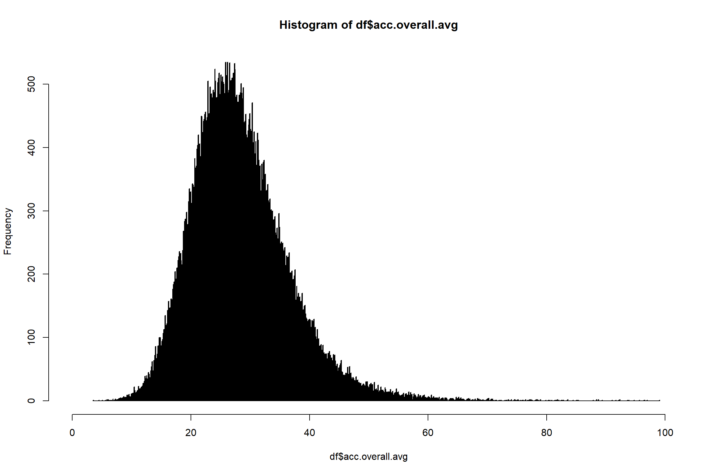
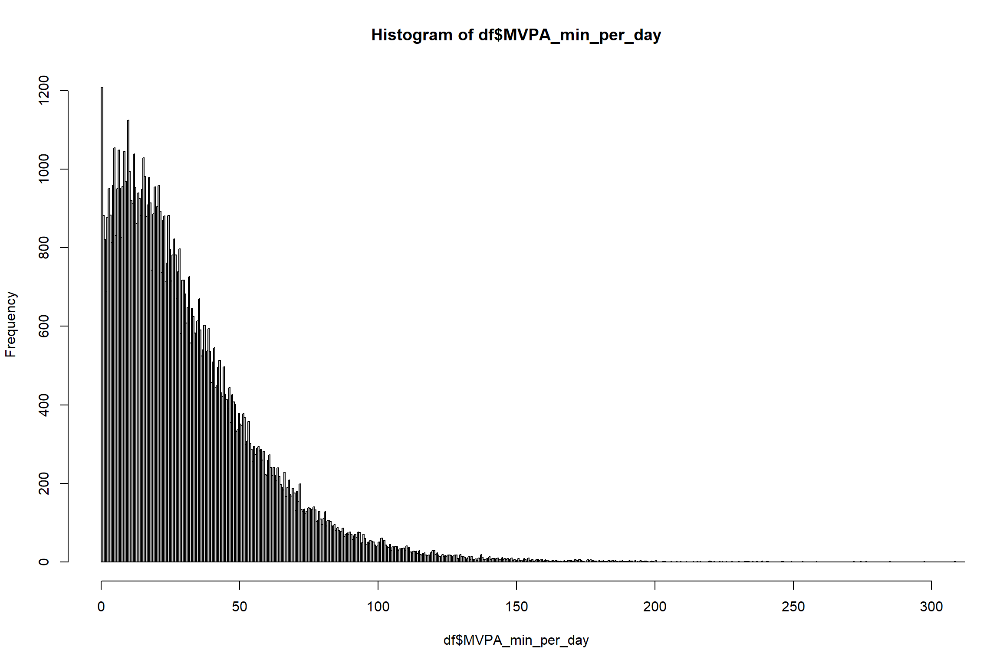
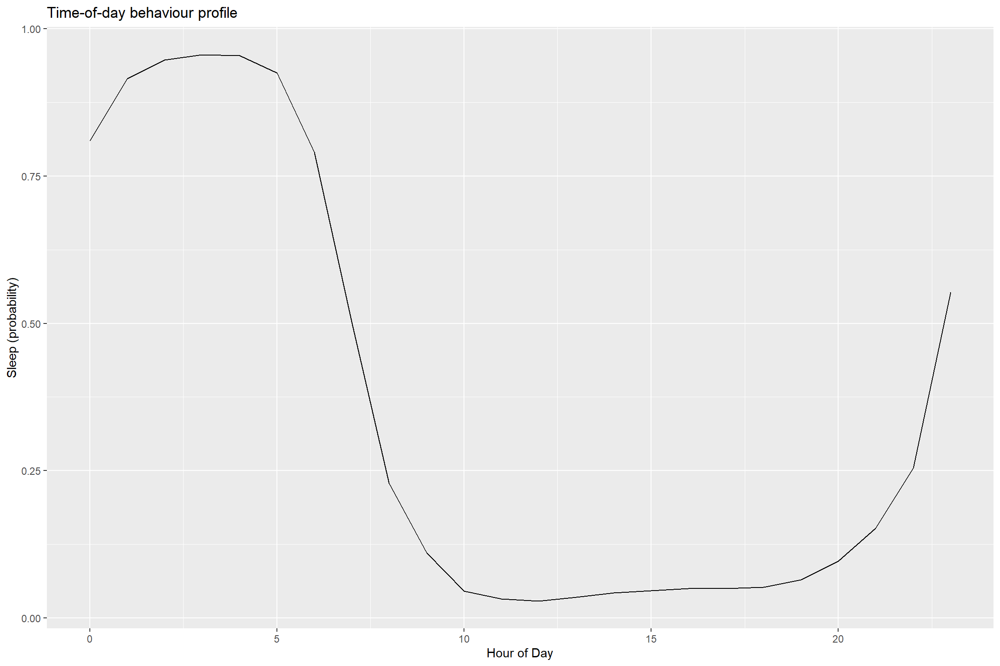
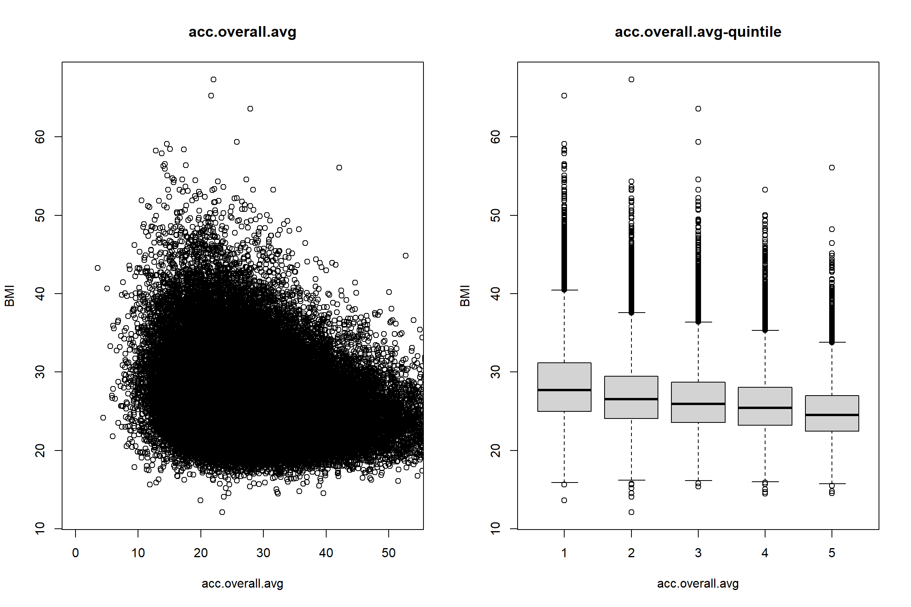
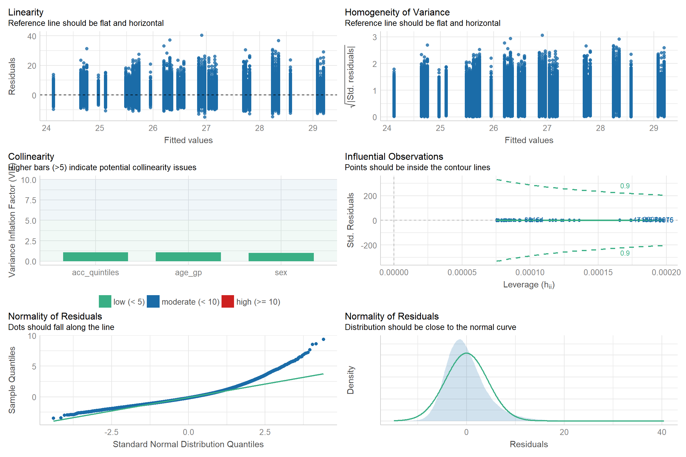
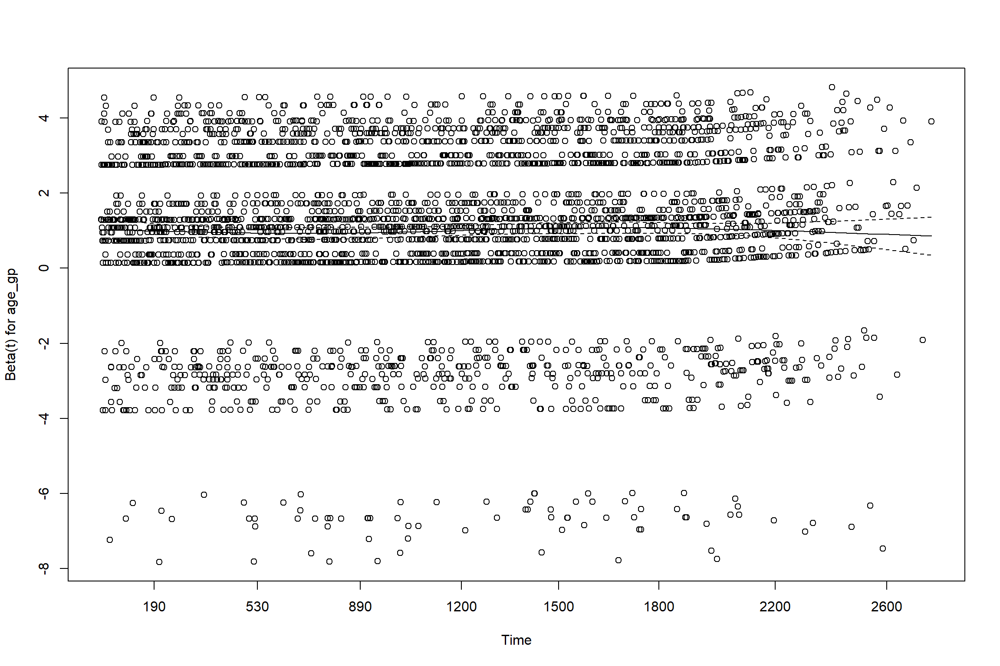
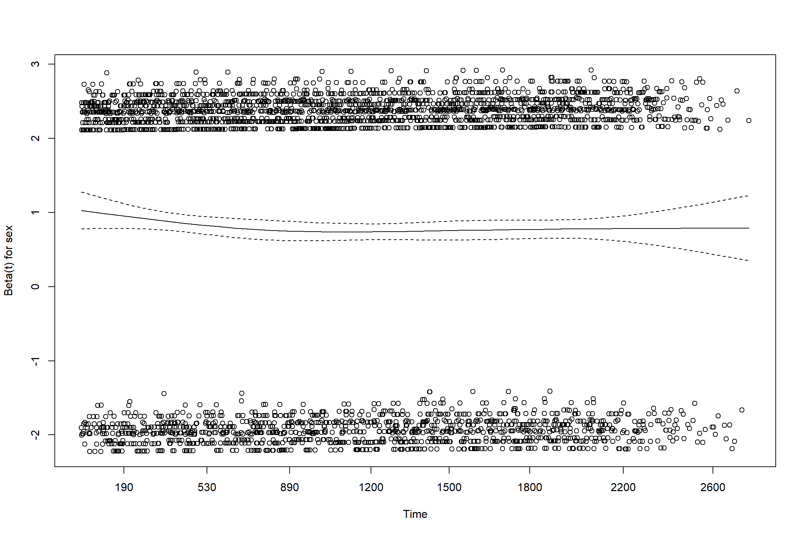
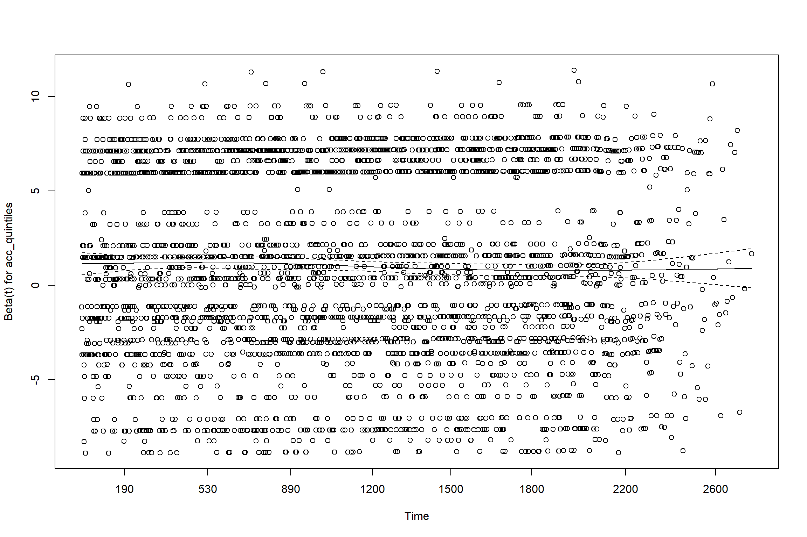
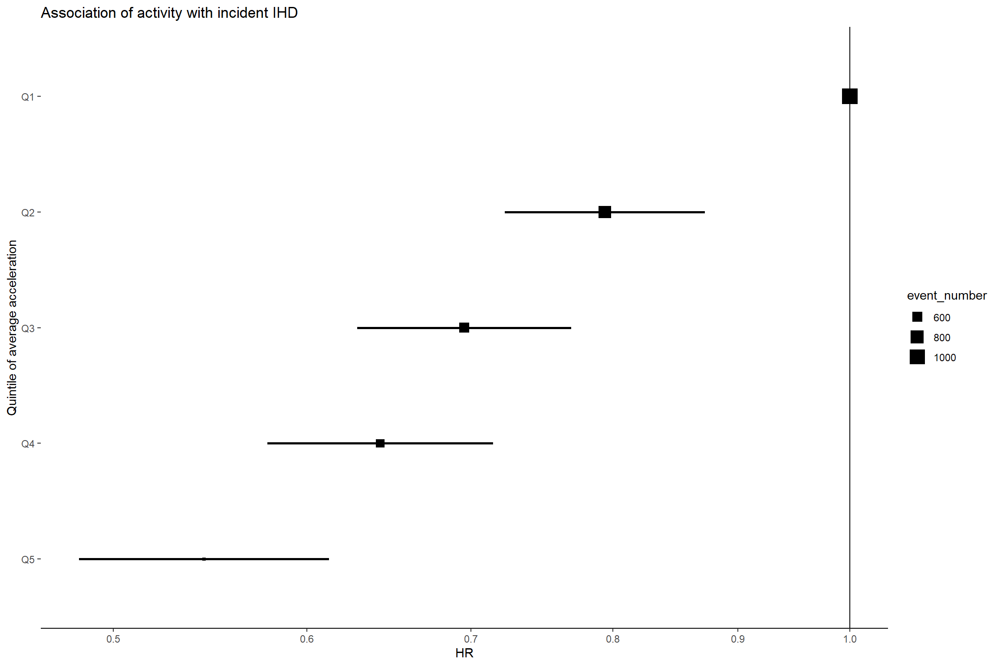

3_HealthAssociationAnalysis.RmdIn this tutorial, we will go through a basic health association analysis using movement behaviour data.
First we will load required packages and some helper functions.
# First we need to install packages that aren't already present
pkgs <- c("ggplot2", "data.table", "survival", "table1", "scales", "performance", "see", "patchwork")
pkgs_inst <- pkgs[!{pkgs %in% rownames(installed.packages())}]
install.packages(pkgs_inst, repos = "https://www.stats.bris.ac.uk/R/" )
rm(pkgs, pkgs_inst) # clean up after ourselves
# Load packages
invisible(lapply(c("ggplot2", "data.table", "survival"), library, character.only = TRUE)) # only loading packages that we'll use a lotAs well as external packages, we’ll use some helper functions we’ve prepared previously. If you want to modify them, you can find them in the file R/utils.R on the GitHub page.
# Load helper functions
source("../R/utils.R")We then load the data prepared in the last tutorial.
To do this with example data, replace the file location below with “/cdtshared/wearables/health_data_files/dataset-with-preprocessing-done.csv”.
df <- fread("../data_and_data_prep/dataset-with-preprocessing-done.csv", data.table = FALSE)Here are some bits of extra prep based on what we’re doing next:
# Calculate proportion of time in different behaviours as min/day and hr/day
vars <- c("MVPA", "light", "sedentary", "sleep")
df[, paste0(vars, "_min_per_day")] <-
lapply(df[, paste0(vars, ".overall.avg")], function(x) 24 * 60 * x)
df[, paste0(vars, "_hr_per_day")] <-
lapply(df[, paste0(vars, ".overall.avg")], function(x) 24 * x)
# Cut by quintile
## Home-brewed cut-by-quantile function:
qtile <-
function(x,
probs = seq(0, 1, 0.25),
labels = NULL,
ordered = FALSE,
na.rm = TRUE) {
breaks <- quantile(x = x, probs = probs, na.rm = na.rm)
out <-
cut(
x = x,
breaks = breaks,
labels = labels,
include.lowest = TRUE,
ordered_result = ordered
)
return(out)
}
## Cut acc by quintile
fifths <- seq(0, 1, by = 0.2)
df$acc_quintiles <- qtile(df$acc.overall.avg,
fifths,
labels = paste0("Q", 1:5))
df$acc_quintiles_values <- qtile(df$acc.overall.avg,
fifths)
rm(vars, fifths) # clean upThis section provides a few examples of descriptive analyses.
As always, it’s worth spending some time here getting to know the data. Are the patterns as you would expect? Does it raise any potential issues? (e.g. when thinking about confounding)
The analyses here are just a sample of what you could do — please do add to them.
The following code constructs a table to describe participant characteristics by quintile of overall acitvity.
We are cheating a bit here by using a package that generates a nicely formatted table. You can of course write your own code to make a table of what you’re interested in.
table1::table1(~ sex + age_gp + smoking | acc_quintiles_values, data=df)| [3.55,21.7] (N=18249) |
(21.7,25.5] (N=18248) |
(25.5,29.3] (N=18249) |
(29.3,34.3] (N=18248) |
(34.3,99] (N=18249) |
Overall (N=91243) |
|
|---|---|---|---|---|---|---|
| sex | ||||||
| Female | 9367 (51.3%) | 10417 (57.1%) | 10887 (59.7%) | 11050 (60.6%) | 10944 (60.0%) | 52665 (57.7%) |
| Male | 8882 (48.7%) | 7831 (42.9%) | 7362 (40.3%) | 7198 (39.4%) | 7305 (40.0%) | 38578 (42.3%) |
| age_gp | ||||||
| 40-49 | 758 (4.2%) | 1198 (6.6%) | 1506 (8.3%) | 1910 (10.5%) | 2589 (14.2%) | 7961 (8.7%) |
| 50-59 | 3597 (19.7%) | 4644 (25.4%) | 5370 (29.4%) | 6106 (33.5%) | 7225 (39.6%) | 26942 (29.5%) |
| 60-69 | 8659 (47.4%) | 8583 (47.0%) | 8318 (45.6%) | 7894 (43.3%) | 6975 (38.2%) | 40429 (44.3%) |
| 70-79 | 5235 (28.7%) | 3823 (21.0%) | 3055 (16.7%) | 2338 (12.8%) | 1460 (8.0%) | 15911 (17.4%) |
| smoking | ||||||
| Current | 1680 (9.2%) | 1249 (6.8%) | 1152 (6.3%) | 1138 (6.2%) | 1044 (5.7%) | 6263 (6.9%) |
| Never | 9813 (53.8%) | 10486 (57.5%) | 10655 (58.4%) | 10818 (59.3%) | 11016 (60.4%) | 52788 (57.9%) |
| Previous | 6756 (37.0%) | 6513 (35.7%) | 6442 (35.3%) | 6292 (34.5%) | 6189 (33.9%) | 32192 (35.3%) |
We’ll also plot some of the variables to get a feel for how they’re distributed.
# overall physical activity
## deciles
quantile(df$acc.overall.avg, prob = seq(0, 1, by = 0.1), na.rm = TRUE)
#> 0% 10% 20% 30% 40% 50% 60% 70%
#> 3.55332 18.98846 21.68659 23.70105 25.54093 27.35039 29.27775 31.49314
#> 80% 90% 100%
#> 34.32457 38.67106 99.02388
## histogram
hist(df$acc.overall.avg, breaks=1e3, xlim=c(0,100))
# MVPA
## deciles
quantile(df$MVPA_min_per_day, prob = seq(0, 1, by = 0.1), na.rm = TRUE)
#> 0% 10% 20% 30% 40% 50% 60% 70%
#> 0.0000 4.9968 9.7920 14.5728 19.5696 25.0560 31.4064 39.1680
#> 80% 90% 100%
#> 49.5216 66.3264 337.0752
## histogram
hist(df$MVPA_min_per_day, breaks=1000, xlim=c(0,300))
We can have a look at some of the machine-learned variables, to see if we believe them! Here we’ll look at plots of probability of being in a particular behaviour by time of day:
plot_average_day(
data = df,
exposure_prefix = "sleep.hourOfDay.",
exposure_suffix = ".avg",
y_label = "Sleep (probability)"
) # This is a custom function. To see what it's doing see R/utils.R
Now let’s look descriptively at something we might expect to vary as activity status varies: BMI. This is just a descriptive plot i.e. it’s not adjusted for any other behaviours.
plot_var_and_quintile(data = df,
exposure = 'acc.overall.avg',
outcome = 'BMI'
) # This is a custom function. To see what it's doing see R/utils.R
Let’s run a minimally (age group and sex) adjusted linear model for BMI, against fifths of average acceleration vector magnitude. This is attempting to model statistically the association we were looking at descriptively in the end of the last section.
min_adj_lm_BMI <- lm(BMI ~ acc_quintiles + age_gp + sex, data = df)We can also look at the model diagnostics to understand more about the fit of the model:
performance::check_model(min_adj_lm_BMI) # It's perfectly possible to do these checks in base R - but this gives us some explanations 
# See https://easystats.github.io/performance/ and Lüdecke et al., 2021, JOSSThe fact the residuals aren’t very normal is probably because the distribution of BMI is a bit skewed.
We can look at the model summary:
summary(min_adj_lm_BMI)
#>
#> Call:
#> lm(formula = BMI ~ acc_quintiles + age_gp + sex, data = df)
#>
#> Residuals:
#> Min 1Q Median 3Q Max
#> -14.843 -2.920 -0.621 2.168 40.423
#>
#> Coefficients:
#> Estimate Std. Error t value Pr(>|t|)
#> (Intercept) 28.29627 0.06033 469.044 <2e-16 ***
#> acc_quintilesQ2 -1.38592 0.04534 -30.567 <2e-16 ***
#> acc_quintilesQ3 -2.03904 0.04556 -44.755 <2e-16 ***
#> acc_quintilesQ4 -2.62327 0.04586 -57.196 <2e-16 ***
#> acc_quintilesQ5 -3.60082 0.04645 -77.517 <2e-16 ***
#> age_gp50-59 0.05426 0.05513 0.984 0.325
#> age_gp60-69 -0.05617 0.05337 -1.052 0.293
#> age_gp70-79 -0.56901 0.06042 -9.418 <2e-16 ***
#> sexMale 0.84334 0.02904 29.043 <2e-16 ***
#> ---
#> Signif. codes: 0 '***' 0.001 '**' 0.01 '*' 0.05 '.' 0.1 ' ' 1
#>
#> Residual standard error: 4.317 on 91234 degrees of freedom
#> Multiple R-squared: 0.08014, Adjusted R-squared: 0.08006
#> F-statistic: 993.6 on 8 and 91234 DF, p-value: < 2.2e-16Here we’ve looked at a very simple linear model. Next steps might be:
glm() function)coxph() function)For example, here’s an initial Cox regression analysis associating quintiles of overall acceleration with incident ischaemic heart disease.
From the data preparation step, we have an event status indicator at exit and a follow-up time variable. Using these, we can run a Cox model using the survival package in R:
cox_model <- coxph(Surv(fu_time, inc_ihd) ~ age_gp + sex + acc_quintiles, data = df)# This line uses functions from the 'survival' packageAs discussed in the lecture, a key assumption of Cox regression is the proportional hazards assumption. There are several ways to assess this. One way is through plots of the Schoenfeld residuals. Read more here (see section 23.2.5 and 23.2.6).
plot(cox.zph(cox_model))
We can look at the model summary:
summary(cox_model)
#> Call:
#> coxph(formula = Surv(fu_time, inc_ihd) ~ age_gp + sex + acc_quintiles,
#> data = df)
#>
#> n= 91243, number of events= 3332
#>
#> coef exp(coef) se(coef) z Pr(>|z|)
#> age_gp50-59 0.69553 2.00477 0.12149 5.725 1.03e-08 ***
#> age_gp60-69 1.37098 3.93920 0.11624 11.795 < 2e-16 ***
#> age_gp70-79 1.82096 6.17777 0.11811 15.418 < 2e-16 ***
#> sexMale 0.79924 2.22385 0.03609 22.145 < 2e-16 ***
#> acc_quintilesQ2 -0.23054 0.79410 0.04801 -4.802 1.57e-06 ***
#> acc_quintilesQ3 -0.36287 0.69568 0.05130 -7.073 1.51e-12 ***
#> acc_quintilesQ4 -0.44199 0.64276 0.05421 -8.154 3.53e-16 ***
#> acc_quintilesQ5 -0.60779 0.54455 0.06000 -10.130 < 2e-16 ***
#> ---
#> Signif. codes: 0 '***' 0.001 '**' 0.01 '*' 0.05 '.' 0.1 ' ' 1
#>
#> exp(coef) exp(-coef) lower .95 upper .95
#> age_gp50-59 2.0048 0.4988 1.5800 2.5438
#> age_gp60-69 3.9392 0.2539 3.1367 4.9471
#> age_gp70-79 6.1778 0.1619 4.9012 7.7869
#> sexMale 2.2238 0.4497 2.0720 2.3869
#> acc_quintilesQ2 0.7941 1.2593 0.7228 0.8725
#> acc_quintilesQ3 0.6957 1.4374 0.6291 0.7693
#> acc_quintilesQ4 0.6428 1.5558 0.5780 0.7148
#> acc_quintilesQ5 0.5446 1.8364 0.4841 0.6125
#>
#> Concordance= 0.696 (se = 0.004 )
#> Likelihood ratio test= 1623 on 8 df, p=<2e-16
#> Wald test = 1473 on 8 df, p=<2e-16
#> Score (logrank) test = 1643 on 8 df, p=<2e-16The exp(coef) column gives the hazard ratio. Not surprisingly, older age and male sex are associated with higher risk of ischaemic heart disease, whereas a higher level of activity is associated with a lower risk of ischaemic heart disease.
We could plot the results:
data_for_plot <- as.data.frame(
exp( cbind(coef(cox_model), confint(cox_model)) )
)
names(data_for_plot) <- c("HR", "lower_CI", "upper_CI")
data_for_plot$var_name <- rownames(data_for_plot)
ncoef <- nrow(data_for_plot)
data_for_plot <- data_for_plot[(ncoef - 3):ncoef, ]
ref_row <-
data.frame(
"var_name" = "Q1",
"HR" = 1,
"lower_CI" = 1,
"upper_CI" = 1
)
data_for_plot <- rbind(ref_row, data_for_plot)
data_for_plot$quintile <-
sub("acc_quintiles", "", data_for_plot$var_name)
data_for_plot$event_number <-
sapply(
X = as.factor(data_for_plot$quintile),
FUN = function(x)
sum(df$inc_ihd[df$acc_quintiles == x])
)
ggplot(data_for_plot, aes(x = HR, y = quintile)) +
scale_x_continuous(trans = "log") +
scale_y_discrete(limits=rev) +
labs(title = "Association of activity with incident IHD", y = "Quintile of average acceleration")+
geom_vline(xintercept = 1) +
geom_errorbar(aes(xmin = lower_CI, xmax = upper_CI), width = 0, size = 1) +
geom_point(aes(size = event_number), shape = 15) +
theme_classic() +
theme(axis.line.y = element_blank())
Again, there’s lots you could do to build on and refine this example:
Have fun! :)